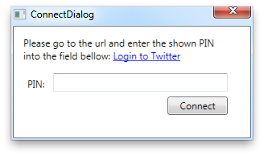
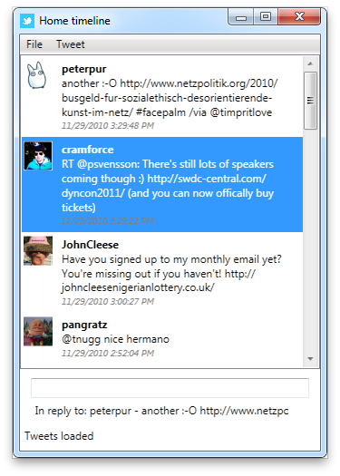

SharpTwitter
SharpTwitter is a Twitter client implemented in C# - which is already encoded in the project's name. The Windows Presentation Foundation (WPF) is used for visualizing the available tasks in this client. Besides WPF the .NET Framework in version 4 is used.
The main purpose of creating SharpTwitter was to get in touch with C# and learn the
Features
SharpTwitter only provides a subset of all the features which are available at Twitter, but the most important features are available:
- Login via OAuth to your Twitter account
- Showing the Home timeline of your account
- Show latest Tweets of an user you follow
- Load all newer Tweets - if there are some available
- Mark/Unmark a Tweet as your favourite
- ReTweet a Tweet of an user
- Reply to a Tweet of an user
Screenshots
In the screenshot below the login dialog where the user grants SharpTwitter access to the users account, is shown.

A screenshot of the user's home timeline is shown below.

Installation
To install and use SharpTwitter, you have to do the following things:
- Install .Net Framework in version 4
- Download SharpTwitter.exe
- Open the downloaded application
- Go to File menu and choose Connect
- Click the link Login to Twitter in the opened dialog
- Login to your Twitter account and enter the presented PIN code in the dialog of the SharpTwitter application
- Click Connect and e voilá, you are connected to Twitter and can start using SharpTwitter as your new, favourite client ;)